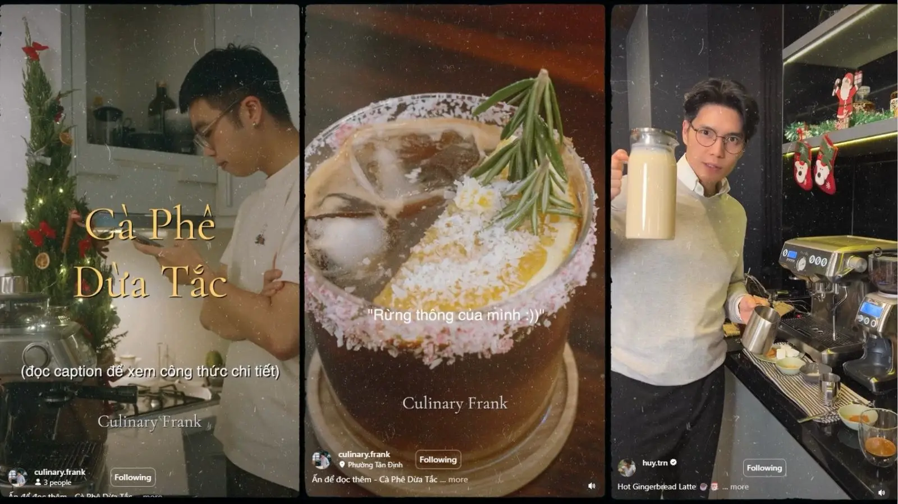
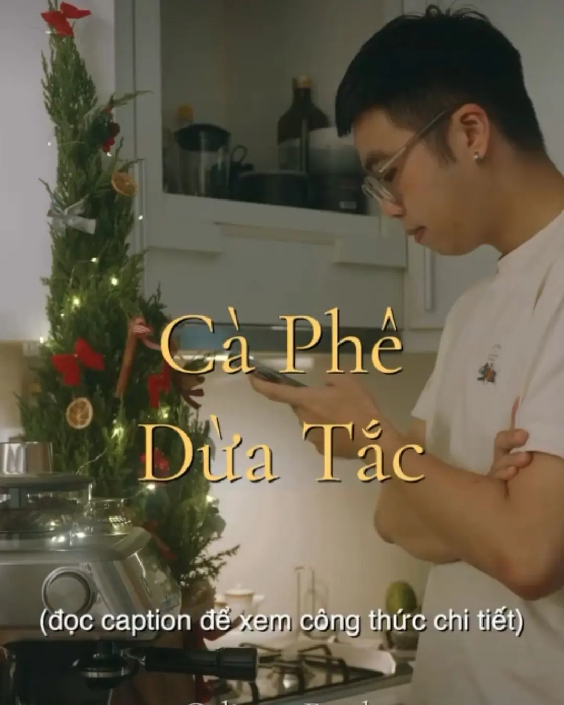
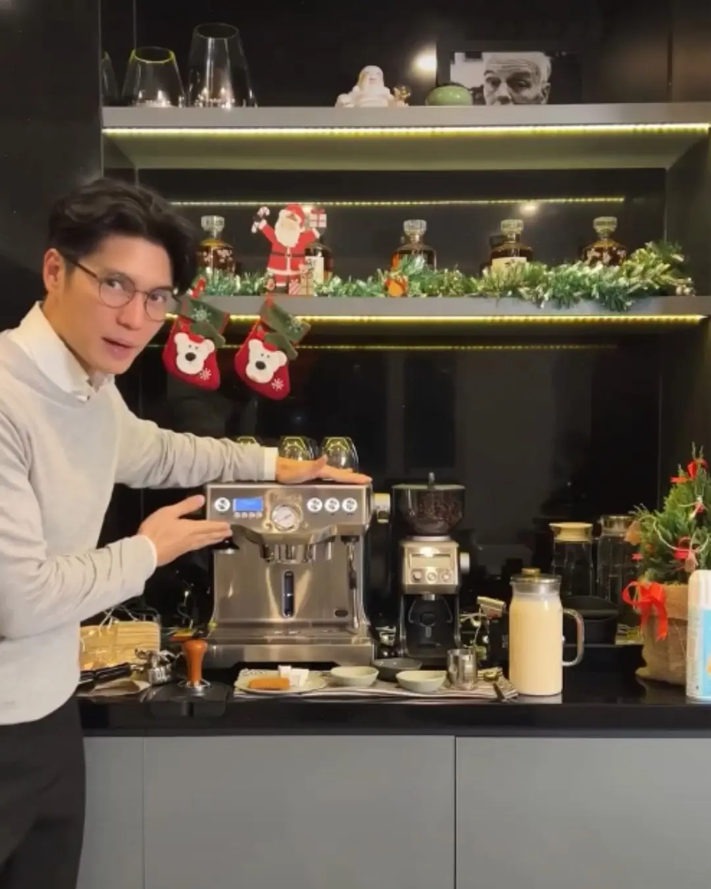

Quay lại danh sách dự án
CASE STUDY · BREVILLE · 2023
Breville Christmas Challenge
Influencer-led UGC Campaign · Tháng 12/2023
Breville Vietnam hợp tác cùng Huy Trần và Frank Culinary triển khai một thử thách pha chế theo chủ đề Giáng sinh. Thông qua creator content và hoạt động UGC, chiến dịch đưa máy pha cà phê Breville vào những tình huống sử dụng gần gũi, đồng thời tạo sự chú ý và khuyến khích cộng đồng tham gia sáng tạo nội dung.

01 · CAMPAIGN IMPACT
Kết quả nổi bật
Số liệu organic được ghi nhận ngày 24/12/2023, tổng hợp từ các nền tảng và không đại diện cho số người dùng duy nhất.
02 · FEATURED INFLUENCER VIDEOS
Nội dung nổi bật từ influencers
Mỗi creator card sử dụng một hình đại diện và liên kết trực tiếp đến các bài đăng công khai trên từng nền tảng.

CREATOR 01
Frank Culinary
Cà Phê Dừa Tắc
Video công thức kết hợp bối cảnh Giáng sinh, nội dung ẩm thực và phần trình diễn sản phẩm tự nhiên.

CREATOR 02
Huy Trần
Gingerbread Latte
Video kết hợp trải nghiệm pha chế tại nhà với không khí mùa lễ hội và hình ảnh máy pha cà phê Breville.
03 · CONTEXT & CHALLENGE
Bối cảnh và thách thức
Mặc dù Việt Nam có nền văn hóa cà phê phát triển, máy pha cà phê gia đình cao cấp vẫn là sản phẩm có mức độ cân nhắc cao. Với mức giá khoảng 15–20 triệu đồng, Breville cần giới thiệu sản phẩm trong những tình huống sử dụng gần gũi, thông qua creators phù hợp và một cơ chế thử thách đủ đơn giản để khuyến khích cộng đồng tham gia.
04 · STRATEGY SNAPSHOT
Tóm tắt định hướng chiến lược
Mục tiêu
Tạo mức độ hiện diện cho Breville thông qua nội dung trình diễn sản phẩm của creators, đồng thời thúc đẩy tương tác và UGC trong mùa Giáng sinh.
Đối tượng mục tiêu
Người dùng thành thị quan tâm đến cà phê, ẩm thực và trải nghiệm pha chế tại nhà; đồng thời thường xuyên theo dõi nội dung công thức và phong cách sống.
Insight
Khách hàng muốn có trải nghiệm cà phê chất lượng cao tại nhà, nhưng cần thấy sản phẩm được sử dụng thực tế bởi những người đáng tin cậy trước khi cân nhắc mức giá cao.
05 · STRATEGIC CHOICE
Từ thông điệp của thương hiệu đến trải nghiệm từ creators
Thay vì để thương hiệu trực tiếp giới thiệu sản phẩm, chiến dịch đặt creators vào vai trò người sử dụng và hướng dẫn trải nghiệm. Máy pha cà phê Breville được tích hợp vào những công thức Giáng sinh thực tế, giúp sản phẩm xuất hiện tự nhiên và tạo thêm lý do để cộng đồng tương tác.
Creator trình diễn sản phẩm
→
Liên kết với mùa lễ hội
→
Cộng đồng tham gia
06 · CAMPAIGN IDEA
Breville Christmas Challenge
Creators sử dụng máy Breville để sáng tạo các công thức đồ uống Giáng sinh, sau đó mời cộng đồng tự quay và đăng video công thức của riêng mình để tham gia thử thách.
Công thức từ creator
Người xem sáng tạo
Thử thách UGC
07 · EXECUTION & MY ROLE
Triển khai và vai trò của tôi
Triển khai
- 01
Huy Trần và Frank Culinary phát triển các video công thức đồ uống Giáng sinh bằng máy pha cà phê Breville.
- 02
Nội dung được phân phối trên TikTok, Facebook, Instagram và YouTube để mở rộng số điểm tiếp xúc.
- 03
Người xem được kêu gọi tự quay video công thức và tham gia thử thách UGC.
Vai trò của tôi
- Xây dựng kế hoạch, ý tưởng và cơ chế triển khai chiến dịch.
- Phát triển định hướng nội dung và khung kịch bản cho video.
- Phối hợp với agency và influencers để hoàn thiện nội dung, đồng thời điều phối kế hoạch phát hành trên các kênh mạng xã hội.
- Theo dõi hiệu quả, tổng hợp kết quả và báo cáo cho quản lý cùng các bên liên quan.
08 · KEY LEARNING
Bài học chính
Lượt xem cao không đồng nghĩa với việc người xem sẽ chủ động tạo nội dung tham gia. Với các chiến dịch UGC, cần đơn giản hóa thể lệ, làm rõ và lặp lại lời kêu gọi hành động, đồng thời cung cấp nội dung mẫu để giảm rào cản tham gia.
Mục tiêu nhận diện và mục tiêu UGC nên được đo lường bằng các chỉ số riêng, thay vì kỳ vọng mức độ tiếp cận cao sẽ tự động tạo ra nhiều bài dự thi.